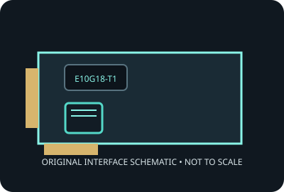

[ MODEL-SPECIFIC NETWORK HARDWARE ]
Synology E10G18-T1 10GbE Adapter
Single-port multigigabit RJ-45 PCIe adapter for qualified Synology systems. Record applies to the exact SKU named here; verify the physical label and revision.

IDENTIFICATION: Product label: E10G18-T1. Link rates are nominal negotiated signaling rates, not measured throughput.
Specifications and OS compatibility
| Catalog subcategory | Ethernet adapters |
|---|---|
| Exact product SKU | E10G18-T1 |
| Controller | Aquantia/Marvell AQtion AQC107. |
| Bus, lane and port interface | PCI Express 3.0 x4; one RJ-45 (8P8C) copper port. |
| Ports and media | 1 port(s); 10GBASE-T interface. |
| Nominal line rate (not measured) | One link at 10, 5, 2.5, 1 Gb/s or 100 Mb/s nominal, selected by auto-negotiation with the peer. |
| Operating systems and drivers | Synology documents DSM 6.1.7-15284 or later on supported NAS models. Linux/Windows use depends on the AQC107 driver and is not a Synology-qualified host configuration. |
| Compatibility notes | Check Synology’s model-specific PCIe compatibility list before use. Requires a PCIe x4 electrical slot; use Cat 6A for 100 m 10GbE, with shorter distances possible on Cat 6 depending on installation. |
| Measured throughput | No physical specimen benchmark is claimed. A meaningful result must identify host, peer, link partner, media, driver/firmware, traffic pattern, test tool and duration. |
Model and revision notes
Check Synology’s model-specific PCIe compatibility list before use. Requires a PCIe x4 electrical slot; use Cat 6A for 100 m 10GbE, with shorter distances possible on Cat 6 depending on installation.
Confirm exact card revision, device ID, transceiver/cable type, host firmware, bracket and driver build before installation. Use vendor qualification data for server/NAS deployment.
Preservation and measurement notes
Record card revision, controller marking and driver/firmware versions. Power down before installation; handle by edges and store in ESD shielding.
No measured throughput is represented by the nominal line rate. Record peer, media, negotiated rate, traffic pattern, test tool and duration for any future benchmark.
Manufacturer sources and documentation
- Synology E10G18-T1 product pageManufacturer product overview and supported use.
- Synology E10G18-T1 download centerManufacturer downloads and documentation for the exact model.
- Synology E10G18-T1 datasheet (PDF)Manufacturer datasheet; compatibility remains model-specific.
Manufacturer documentation takes precedence for exact SKU, board revision and platform qualification; controller-family data alone does not establish card compatibility.